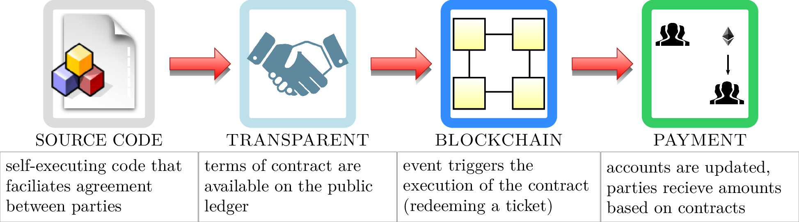

\documentclass[svgnames]{standalone}
\usepackage{lmodern}
\usepackage{tikz}
\usetikzlibrary{positioning}
\usepackage{xcolor}
\definecolor{lightgray}{rgb}{0.83, 0.83, 0.83}
\definecolor{lightblue}{rgb}{0.68, 0.85, 0.9}
\definecolor{brandeisblue}{rgb}{0.0, 0.44, 1.0}
\definecolor{darkpastelgreen}{rgb}{0.01, 0.75, 0.24}
\definecolor{electricgreen}{rgb}{0.0, 1.0, 0.0}
\usetikzlibrary{fadings,shapes.arrows,shadows,calc}
\tikzset{bubble/.style={rectangle, draw=gray,rounded corners,fill=#1,align = flush center,minimum height=1cm,minimum width=1.25cm}}
\tikzfading [name=arrowfading, top color=transparent!0, bottom color=transparent!95]
\tikzset{arrowfill/.style={top color=OrangeRed!20, bottom color=Red, general shadow={fill=black, shadow yshift=-0.8ex, path fading=arrowfading}}}
\tikzset{arrowstyle/.style={draw=FireBrick,arrowfill, single arrow,minimum height=#1, single arrow,
single arrow head extend=.2cm,}}
\begin{document}
\begin{tikzpicture}[
bigcircle/.style={ % style for the circles
text width=1.6cm, % diameter
align=center, % center align
line width=0.5mm, % thickness of border
draw, % draw the border
circle, % shape
font=\sffamily\footnotesize % font of the year
}
node distance=10mm and 16000mm % vertical and horizontal separation of nodes, when positioned with e.g. above=of othernode
]
\node [rectangle,draw=lightgray!80, line width=2mm, inner sep=0pt,rounded corners,minimum width=1.6cm, minimum height=2.45cm,label={below:SOURCE CODE}] (contractCode) {\includegraphics[width=2.1cm]{if_source_moc_7003.png}};
\node [rectangle, line width = 0.01 mm, draw=black, below = 0.5cm of contractCode, minimum height=1.45cm,text width=3.85cm] () {self-executing code that faciliates agreement \\ between parties};
\node [rectangle,draw=lightblue!80, line width=2mm, inner sep=0pt,rounded corners,minimum width=2.2cm, minimum height=2.45cm,right= 1.75cm of contractCode,label={below:\textsc{TRANSPARENT}}] (handshake) {\includegraphics[width=2.1cm]{handshake.png}};
\node [rectangle, line width = 0.01 mm, draw=black, below = 0.5cm of handshake, minimum height=1.45cm,text width=3.85cm] () {terms of contract are available on the public ledger};
\node [rectangle,draw=brandeisblue!80, line width=2mm, inner sep=0pt,rounded corners,minimum width=2.2cm, minimum height=2.45cm,right= 1.75cm of handshake,label={below:\textsc{BLOCKCHAIN}}] (blockchain) {\includegraphics[width=1.9cm]{blockchain.pdf}};
\node [rectangle, line width = 0.01 mm, draw=black, below = 0.5cm of blockchain, minimum height=1.45cm,text width=3.95cm] () {event triggers the \\ execution of the contract (redeeming a ticket)};
\node [rectangle,draw=darkpastelgreen!80, line width=2mm, inner sep=0pt,rounded corners,minimum width=2.2cm, minimum height=2.45cm,right= 1.75cm of blockchain,label={below:\textsc{PAYMENT}}] (payment) {\includegraphics[width=1.9cm]{transferMoney.png}};
\node [rectangle, line width = 0.01 mm, draw=black, below = 0.5cm of payment, minimum height=1.45cm,text width=3.85cm] () {accounts are updated, parties recieve amounts based on contracts};
% Arrows
\node [arrowstyle=1.25cm] at ($(contractCode.east)!0.5!(handshake.west)$) {};
\node [arrowstyle=1.25cm] at ($(handshake.east)!0.5!(blockchain.west)$) {};
\node [arrowstyle=1.25cm] at ($(blockchain.east)!0.5!(payment.west)$) {};
%\node [arrowstyle=2.5cm,xshift=-0.1cm,yshift=-2.5cm] at ($(sa.south)!0.5!(lc.south)$) {git commit};
%\node [arrowstyle=3.5cm,xshift=-0.1cm,yshift=-3.5cm] at ($(lc.south)!0.5!(rc.south)$) {git push};
\end{tikzpicture}
\end{document}